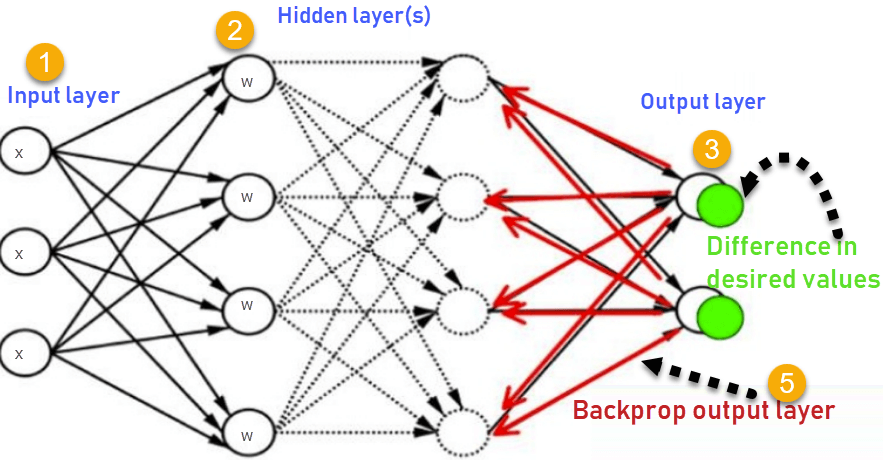
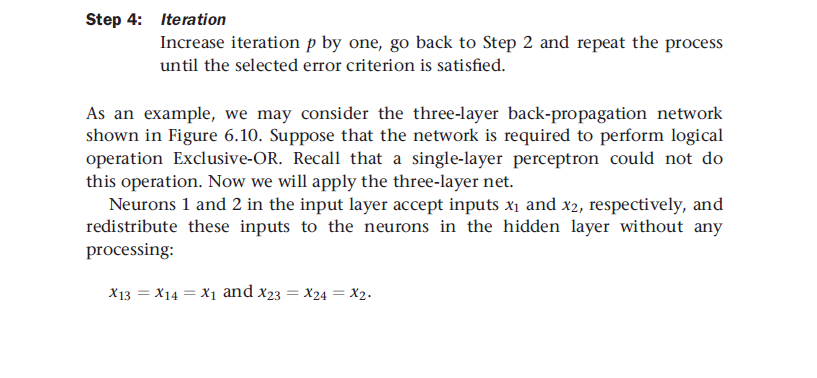
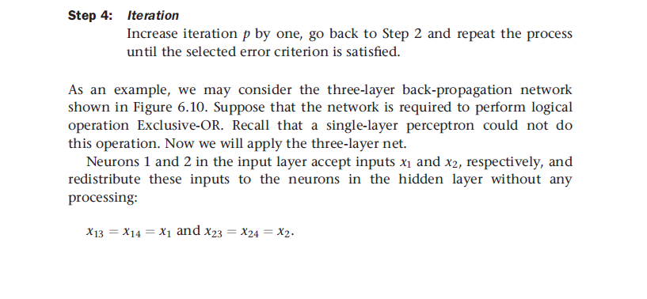

A Beginner's Guide For Back-Propagation
Multilayer neural networks
A multilayer perceptron is a feedforward neural network with one or more hidden layers.Typically, the network consists of an input layer of source neurons, at least one middle or hidden layer of computational neurons, and an output layer of computational neurons. The input signals are propagated in a forward direction on a layer-by-layer basis
But why do we need a hidden layer?
Each layer in a multilayer neural network has its own specific function.
- The input layer: accepts input signals from the outside world and redistributes these signals to all neurons in the hidden layer, input layer rarely includes computing neurons.
- The hidden layer: detect the features; the weights of the neurons represent the features hidden in the input patterns. These features are then used by the output layer in determining the output pattern.
- The output layer: accepts output signals, or in other words a stimulus pattern, from the hidden layer and establishes the output pattern of the entire network.
With one hidden layer, we can represent any continuous function of the input signals, and with two hidden layers even discontinuous functions can be represented.
Why is a middle layer in a multilayer network called a ‘hidden’ layer? What does this layer hide?
A hidden layer ‘hides’ its desired output, Neurons in the hidden layer cannot be observed through the input/output behaviour of the network.
Can a neural network include more than two hidden layers?
Commercial ANNs incorporate three and sometimes four layers, including
one or two hidden layers. Each layer can contain from 10 to 1000
neurons.
Experimental neural networks may have five or even six layers,
including three or four hidden layers, and utilise millions of
neurons, but most practical applications use only three layers,
because each additional layer increases the computational burden
exponentially.
What is Backpropagation?
The Backpropagation algorithm is a supervised learning method for
multilayer feed-forward networks from the field of Artificial Neural
Networks.
Typically, a back-propagation network is a multilayer network that has
three or four layers. The layers are fully connected that is every
neuron in each layer is connected to every other neuron in the
adjacent forward layer.
How Backpropagation Algorithm Works?
- Inputs X, arrive through the preconnected path
- Input is modeled using real weights w. The weights are usually randomly selected.
- Calculate the output for every neuron from the input layer, to the hidden layers, to the output layer.
- Calculate the error in the outputs, Error= Actual Output – Desired Output
- Travel back from the output layer to the hidden layer to adjust the weights such that the error is decreased.
- Keep repeating the process until the desired output is achieved
Back-Propagation Steps And Equations
 

Why We Need Backpropagation?
- Backpropagation is fast, simple and easy to program
- It has no parameters to tune apart from the numbers of input
- It is a flexible method as it does not require prior knowledge about the network
- It is a standard method that generally works well It does not need any special mention of the features of the function to be learned.